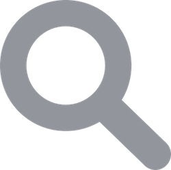
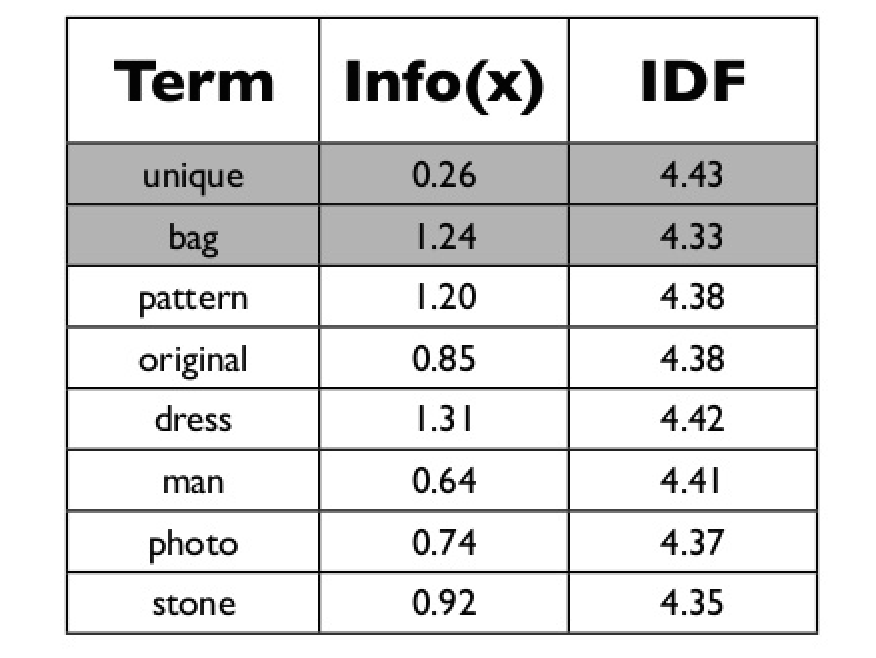

A Cal Poly Specific Search Engine
Hooli Search
A Cal Poly Specific Search Engine
Intra Cal Poly searches are typically very bad with older, outdated pages often showing up. In the end everyone just uses Google anyway. In this project we aim to implement a viable and robust internal Cal Poly search engine as a replacement for current intra search.
Our main search methods compare content similarity of the query and the pages indexed by our crawler. In particular we use information retrieval methods, cosine similarity and TF-IDF. However, from our class study we know that content similarity alone is no longer sufficient. A page owner can repeat keywords and add many related words to increase page rankings or make pages relevant to a large number of queries. In order to choose only 30-40 pages from the tens of thousands of pages we index and rank them to suitably present to the user, we use PageRank.
PageRank uses links in the anchor text of hyperlinks. Hyperlinks carry important information, such as page organization, but more importantly in our case which pages point to which other pages. Such out-going hyperlinks often indicate an implicit conveyance of authority to the pages being pointed to. For example, Reddit is considered an authoritative site because many sites cite and point to it. Those pages that are pointed to by many other pages are likely to contain authoritative information and thus are ranked higher in our search if they have a similar TF-IDF score to other pages with lower authority.
The search engine UI should be very familiar to users who have used other search engines before. The search results are presented in a list of results generated when the search completes. The results may be a mix of web pages, pdfs, and other types of files. We currently do not support image files and executable files.
Crawling is the process by which our search application discovers new and updated pages to be added to our index. We start with a set of precomputed urls using the Google Search API. Since potentially many Cal Poly pages are not reachable by following a path from a single url (for example, the Cal Poly Computer Science homepage csc.calpoly.edu/), we seed our crawler with multiple urls. Rather than manually entering hundreds of urls, we built a tool that sources urls from Google search results. This tool works by taking in a search query and number of pages of search results to iterate through.
python3 stack.py site:csc.calpoly.edu/~ 10
Given the command shown above, the tool would search Google for 10 search result pages worth of urls prefixed with csc.calpoly.edu/~ . Note: We are limited to 100 total pages per day due to API restrictions, with each page returning 10 results. These are the urls of Cal Poly user accounts, whether for faculty or students. The urls are then sent to persist in a text file which can later be read by the crawler as soon as it is run.
These urls are then stored on the initial stack and one by one our crawler pops them off and visits each of these websites. It detects links on each page and adds them to its list of pages to crawl, using BeautifulSoup. Additionally url statistics such as number of outgoing links and number of incoming links are stored. Please view the database section for more details. The visited sites are added to a list so they are not revisited (added to the stack). This process continues until the stack is empty, which indicates all of the urls on the csc.calpoly.edu domain have been crawled.
The crawler is relatively naive, it does not make optimizations like keep track of dead links and update its index as Google does. Rather it just ignores any url it cannot properly visit and read. In the future we may research and implement more optimizations.
The figure above shows the schema used for the MySQL database, specifically MariaDB. The foreign keys and associated primary keys are colored to display the relation between tables. We decided to use a relational database for this assignment to build our index of the pages visited by our crawler. Upon visiting a new page, the crawler gets all of the text and does an initial preprocessing step to remove unnecessary characters and whitespace. The current page URL and a list of all words on the page are then passed to the database API where the data is inserted into the Words and WordMeta tables shown in Figure 2. We retain the position of each word and also store that in the database. After the database has populated the relevant tables with the textual data the crawler gathers all of the outlinks on the current page and sends that to the database API for insertion into relevant tables. The crawler doesn’t actually insert into the tables shown in the figure above, rather the database API inserts into temporary tables specifically WordMetaTemp and HyperlinksTemp since those are essential for the search. When the crawler finishes a call is made to the API to finish the transaction and the tables are merged and the newly crawled data is ready for ranking.
The schema is fairly lightweight and more information could have been stored but we decided against it. For instance, more information about each link could have been stored in order to speed up the client-side gathering of link data. We tuned all of our queries to be very efficient allowing the backend to operate very quickly on large search queries or inserts. The crawling doesn’t really need to be fast but the searching absolutely does. The schema yields itself to very nice queries related to both PageRank and TF-IDF. The Hyperlinks table provides a quick way to gather all in and outlinks and the WordMeta tables provides easy access to all links associated with a given word. In combination, we were able to see very fast database access.
The schema was one of the first finalized pieces of the search engine. The queries were initially extremely slow and had to be modified numerous times to get a reasonable response time for a user. The initial queries were being called in loops for each word and link, the volume of calls being made to the database was not scalable. Each query was redesigned to aggregate as much information as possible which allowed us to make only one call to the database for each necessary query in the algorithm.
Upon entering a search query and pressing the “search” button, the query string is handed off to the backend to perform string decomposition, term weighting, and relevance ranking. The query is broken into a list of terms with stopwords removed, preserving the order of the query. We then perform Term Frequency - Inverse Document Frequency (TF-IDF) weighting in order to assign a value to each word corresponding to its importance in the given document. After the weights for each search query term have been calculated for each document, we use Cosine Similarity to convert these weights into a single scalar value representing the similarity of the document to the search query.
TF-IDF is a weighting scheme used to provide a value for each search term in each document. The Term Frequency (TF) part of TF-IDF corresponds to the frequency of a term within a document divided by the maximum frequency of any word within the document. This normalizes the frequency of a term to be between 0-1. The Inverse Document Frequency (IDF) part of TF-IDF corresponds to the total number of documents divided by the number of documents containing the given term. This allows words that are less frequent to be ranked more highly and words that are more common to be disregarded. To obtain the final TF-IDF score, the TF and IDF values are multiplied together. This process is then repeated for each term in the search query, resulting in a vector of TF-IDF weights for the given document. The TF-IDF weight vector is also computed for the search query itself, treating it as if it were a document.
We then take the weight vectors computed for each link and compare it to the query’s weight vector using Cosine Similarity. Cosine Similarity tries to reduce the effect of repeating terms multiple times and ranks documents with 10 instances of each word the same as documents with 1 instance of each word. However, if a document contains many instances of one search term and few instances of another search term, its Cosine Similarity score will actually be lower. This problem became evident when searching for “Aaron Keen”. Keen’s CSC webpage contains many publications listing his last name, but his first name is only listed once on the page. Because of this, we decided to explore other similarity metrics as well, namely Euclidean Distance. Using Euclidean Distance, Keen’s CSC webpage was ranked much more highly. The downside of Euclidean Distance is that it may pick up pages with many instances of “Aaron” as well, which may not be as relevant.
We then combined the similarity score with the previously computed PageRank score for the each link using the Harmonic Mean of the two values. The Harmonic Mean gives us a higher value when both scores are high, and a low value when either of the scores are low. This results in our relevance rankings for the links, sorted by highest harmonic mean. We then return the top 10 links to the frontend, which displays them on our website.
PageRank is an algorithm that determines the prestige for a given page based on its in-links, which are hyperlinks that point to that page from other pages. This operation is performed after the completion of the crawler because it does not depend on the search queries. The PageRank for each link can be computed beforehand and thus easily accessible during a search query.
The database is populated with every hyperlink encountered during the crawl represented by the inlink and outlink. After the crawl, the PageRank module retrieves all the links in our database along with each link’s corresponding in-links and number of out-links that the link has. Outlinks are hyperlinks that point out to other pages from the current link. The PageRank algorithm now has all the data necessary to perform its computation.
The distribution of the PageRank matrix is initially set to the probability of picking a page at random, which is one over the number of pages in the database. We then use the power-iteration method to calculate a new PageRank matrix each iteration until the PageRank values do not change much and converge. The change in PageRank values are compared with an epsilon to determine when to stop iterating. The PageRank values of the final matrix are the PageRanks for the links.
Dangling pages, which are pages with no outlinks are dealt with by adding a complete set of outgoing links from each page to all the pages in the web. This is represented in the code by a dangling product that is calculated each iteration, and of course the weights of these outgoing links are much lower due to the damping factor. After the full computation, the PageRank value for each link is inserted into the database and is ready for use in our search query algorithm TF-IDF.

The user interface is simple, as works best for a search engine. The user can enter their search query and click the search button or press the ‘enter’ key. The user can also search using the ‘pagerank search` button, which will return the results that use the pagerank algorithm.
When the results are returned to the user, the top 3 are highlighted in a green accent to make them more prominent. We’ve also added a label to pages on the users.csc.calpoly.edu domain, so users know which results are from professor (or student) pages. To measure how fast our searches are running, the page will display the total time from search query being entered to results being returned.
| Team Member | Duties |
|---|---|
| Jon Catanio | Database, Combining components, DB API, Web Hosting |
| Tyler Dahl | TF-IDF, DB API |
| Alex Greene | UI, UI Endpoint, Crawler Initial Stack |
| Lohit Vankineni | PageRank |
| Shubham Kahal | Crawler, Project Website |